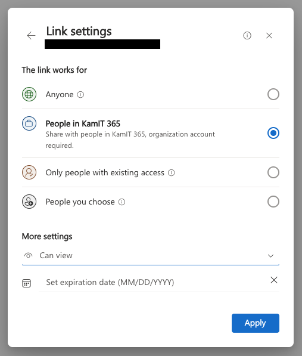

Ohjeita videoon/palautukseen
Tekninen ohje
Tallennus
Voit tallentaa videon esimerkiksi seuraavilla työkaluilla:
- Microsoft Clipchamp. Työkalu on käytettävissä suoraan selaimesta ja video tallentuu pilvipalveluun (KamiT OneDriveen).
- OBS Studio. Avoimen lähdekoodin videotallennin ja striimaustyökalu. Tiedosto tallentuu lokaalisti todella hyvälaatuisena ja on täten helposti leikattavissa.
Jos haluat leikata videota, siihen soveltuu ainakin:
- Microsoft Clipchamp. Online-editori. En ole käyttänyt, mutta se vaikuttaa helpolta.
- Shotcut. Avoimen lähdekoodin videoeditointiohjelma, joka on saatavilla useille alustoille.
- DaVinci Resolve. Tehokas videoeditointiohjelma, joka tarjoaa laajat ominaisuudet ilmaisversiossaan.
Suosittelen opiskelijoita jakamaan keskenään vinkkejä helpoista editoreista. Opettajalla on kokemusta pääasiassa Premierestä tai DaVinci Resolvea, jotka eivät ole aivan helpoimmasta päästä.
Palautus
Palautus hoidetaan lisäämällä linkki Reppu-palvelun palautuslaatikkoon. Linkin tulee olla luotu siten, että se toimii opettajan koneella. Pikaohje tähän on:
- Jos YouTube, valitse Visibility: Unlisted.
- Jos OneDrive, jaa linkkinä siten, että kaikilla linkin saaneilla (ainakin KamiT AD:ssa) on lupa nähdä se. Tästä on kuva alla.

Kuva Tiedoston jakaminen OneDrivessä vaatii Share-ominaisuuden käyttöä. Ethän siis kopioi URL:ia selaimen osoiteriviltä vaan käytä Share-ominaisuutta. Kohdasta Link Settings pitäisi löytyä kuvassa näkyvä menu.
Repositorio
Käytäthän opettajan sinulle antamaasi repositoriota, jotta opettajalla on automaattisesti pääsy sinun työhösi. Varmista, että repositoryn juuressa olevassa README.md tiedostossa on yksityiskohtaiset ohjeet, joilla palvelun saa päälle. Ja muista vielä testata ohjeistus puhtaalla kloonilla.
Sisällöllinen ohje
Palautat 15 minuutin video. Videolla:
- Esittelet Azureun luodun kokonaisuuden, joka on:
- 1B tasolla (maksimiarvosana 1)
- 2B tasolla (maksimiarvosana 5)
- 2C tasolla (maksimiarvosana 5, lisäpisteitä
Koodi-kriteeriin)
- Palvelu nostetaan pystyyn videolla (
terraform apply) - Palvelu näkyy ajossa. Selaimessasi näkyy Azure Portal ja siellä luodut palvelut.
- Azure Storage Browserissa näkyy malli ja jonodataa.
- Palvelu luokittelee kuvan todistettavasti.
- Palvelu kouluttaa uuden mallin todistettavasti.
- Selität, kuinka palvelu on rakentunut.
Opettaja arvioi työsi Arviointityökalulla. Valitse vetovalikosta Videoitu demo, ja voit kokeilla, kuinka arvioisit itse oman työsi.